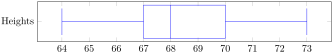
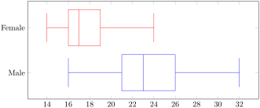

There are \(n = 23\) values. To find the median, \(L = 0.5(23) = 11.5\text{.}\) Round up and look at the 12th value.
Table7.5.6.
Height
Frequency
Values
64
1
1
65
2
2 - 3
67
3
4 - 6
68
6
7 - 12
69
4
13 - 16
70
5
17 - 21
72
1
22
73
1
23
The 12th value is 68. \(M = 68\text{.}\)
To find the 1st quartile, \(L = 0.25(23)=5.75\text{.}\) Round up and look at the 6th value. \(Q_1 = 67\text{.}\)
To find the 3rd quartile, \(L = 0.75(23) = 17.25\text{.}\) Round up and look at the 18th value. \(Q_3 = 70\text{.}\)
To find the population standard deviation, add up squared deviations from the mean, divide by the number values in the dataset, and take the square root.
Table7.5.7.
Frequency
\(x\)
\(x - \mu\)
\((x-\mu)^2\)
1
\(64\)
\(64 - 68.4 = -4.4\)
\((-4.4)^2 = 19.36\)
2
\(65\)
\(65 - 68.4 = -3.4\)
\((-3.4)^2 = 11.56\)
3
\(67\)
\(67 - 68.4 = -1.4\)
\((-1.4)^2 = 1.96\)
6
\(68\)
\(68 - 68.4 = -0.4\)
\((-0.4)^2 = 0.16\)
4
\(69\)
\(69 - 68.4 = 0.6\)
\((0.6)^2 = 0.36\)
5
\(70\)
\(70 - 68.4 = 1.6\)
\((1.6)^2 = 2.56\)
1
\(72\)
\(72 - 68.4 = 3.6\)
\((3.6)^2 = 12.96\)
1
\(73\)
\(73 - 68.4 = 4.6\)
\((4.6)^2 = 21.16\)
Add up the squared deviations, by multiplyig them by their frequencies:
The box will extend from \(Q_1 = 67\) to \(Q_3 = 70\) with a line drawn at the median, \(M = 68\text{.}\) The whiskers extend from the minimum value of \(64\) to the maximum value of \(73\text{.}\)

Figure7.5.8.Image Credit: RRCC
5.
The box plots below show the ages of both men and women Olympic gymnasts. Use the box plots to answer the following questions.

Figure7.5.9.Image Credit: RRCC
What is the median age of a female Olympic gymnast?
25% of the female gymnasts are ___ or older.
____ % of the male gymnasts are 23 or younger.
Which gender has a larger range in ages of athletes?
The mean price of a dozen eggs is $2.19 with a standard deviation of $0.09. The mean price of a pound of chicken is $5.89 with a standard deviation of $0.15. Which item had more variability in prices? Explain.